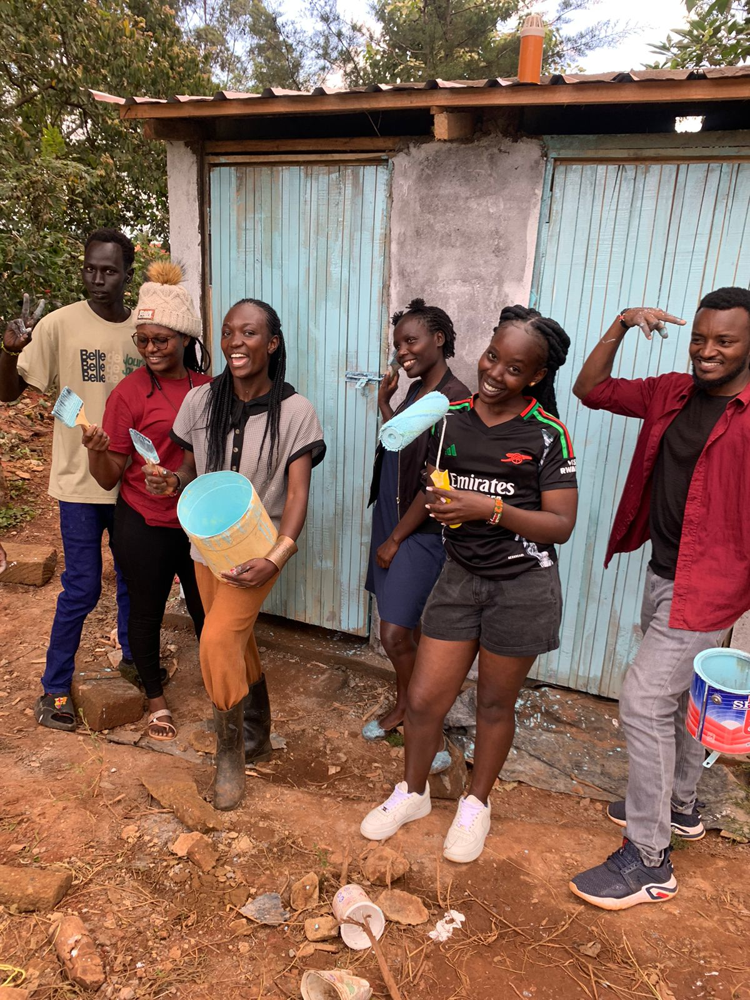
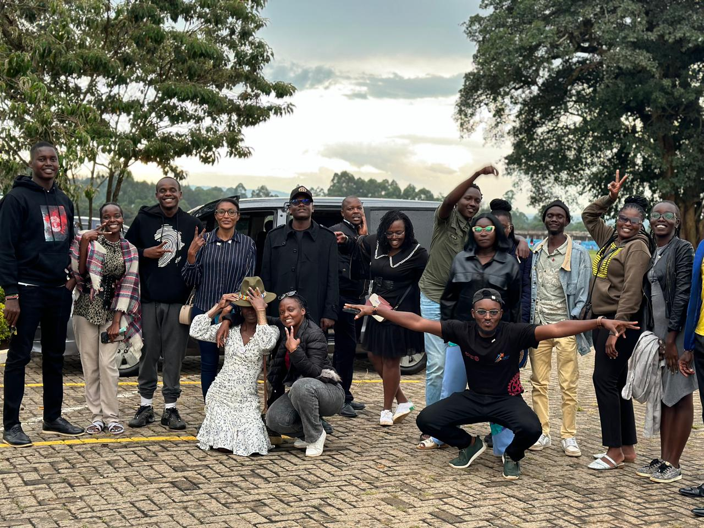
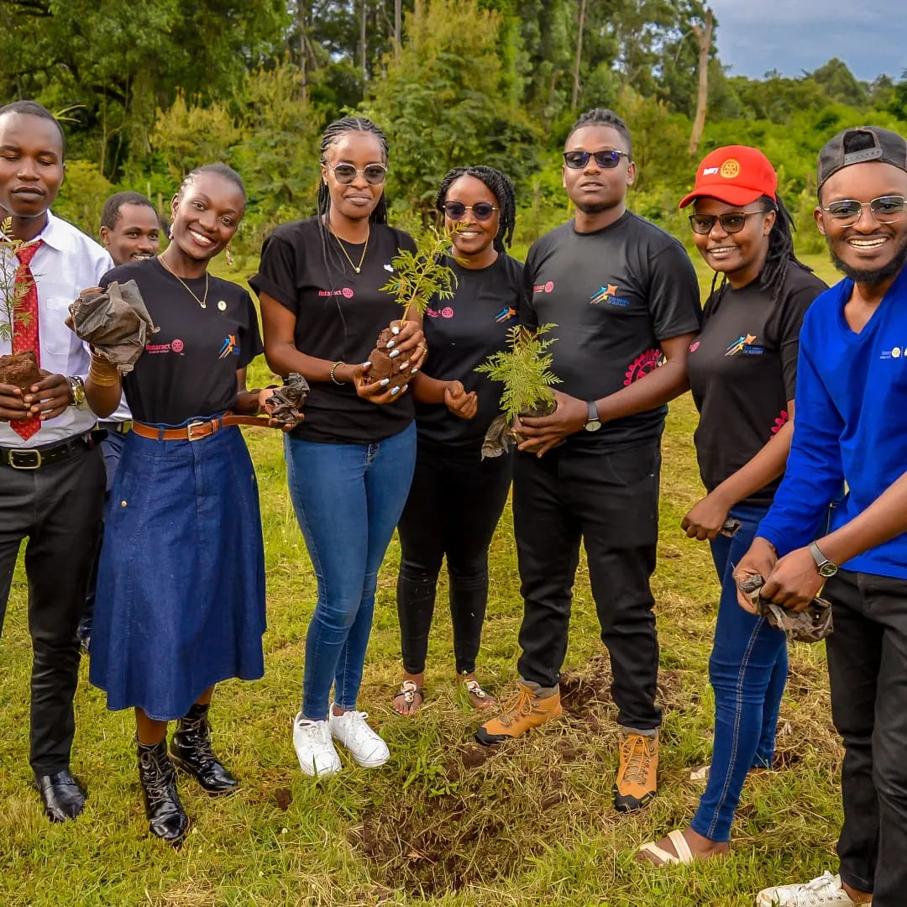

Welcome to Rotaract Club of Kitale
Heeeeey we are the rotaract club of Kitale, a group of young minds that come together to serve the community, build leadership skills, professional growth and a lasting friendships. We are a subsidiary of Rotary International, and we work closely with our sponsor Rotary club, local around international partners to plan and implement projects that bring impact to our community and beyond.




Who We Are.
Rotaract Club of Kitale is a youth-based club for young adults who want to serve, lead, learn, and grow together. We are guided by the our way test in our engagements:
- Is it the TRUTH?
- Is it FAIR to all concerned?
- Will it build GOODWILL and better FRIENDSHIPS?
- Will it be BENEFICIAL to all concerned?
- Is it FUN!!!!
Our Partners.
The success of any Rotaract club depends not only by passion of its embers but also on the strength of it's partnerships,for us strategic collaborations present an opportunity to expand our reach, increase resources and create sustainable impact within the community. Through these collaborations we strengthen our initiatives in; Healthcare, education, enviroment conservation, youth empowerment and economic development.
Join us today .
You got this far? We believe you are ready to make a change with us.So lets get you started come join our fellowships, meet our family and lets serve together.
Start Your Membership Journey